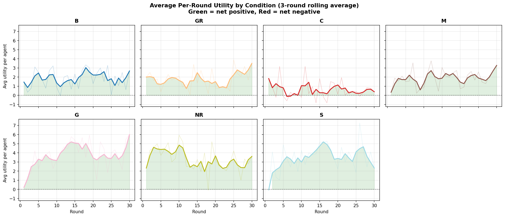
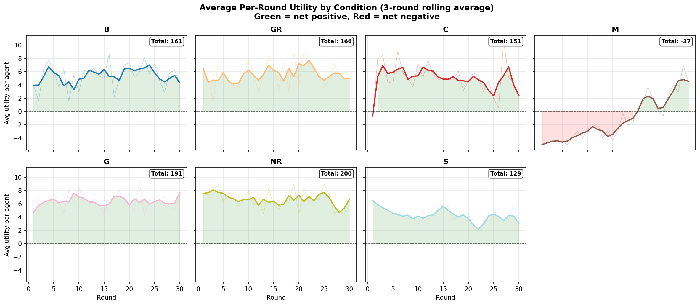
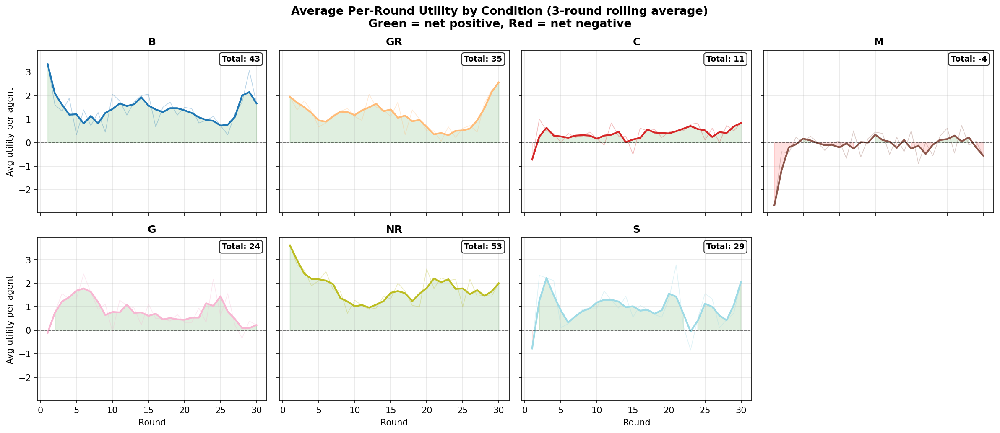
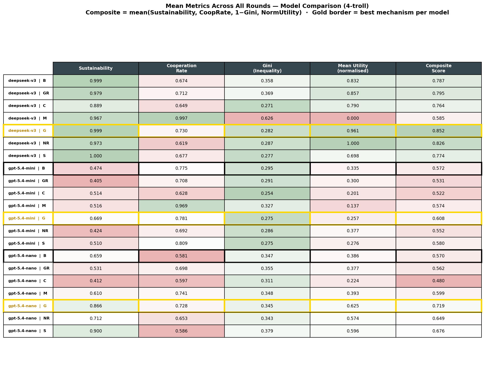
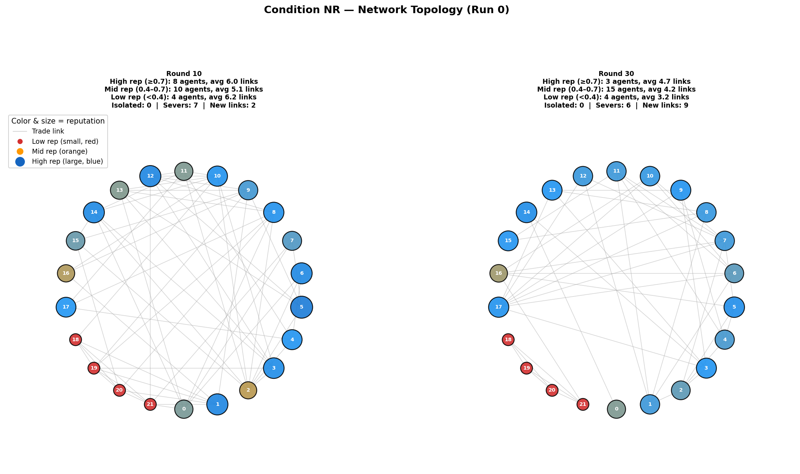
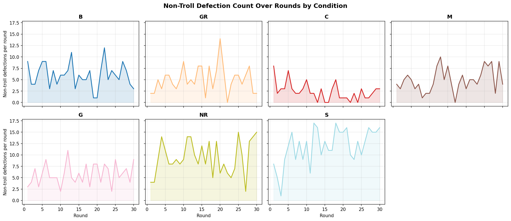
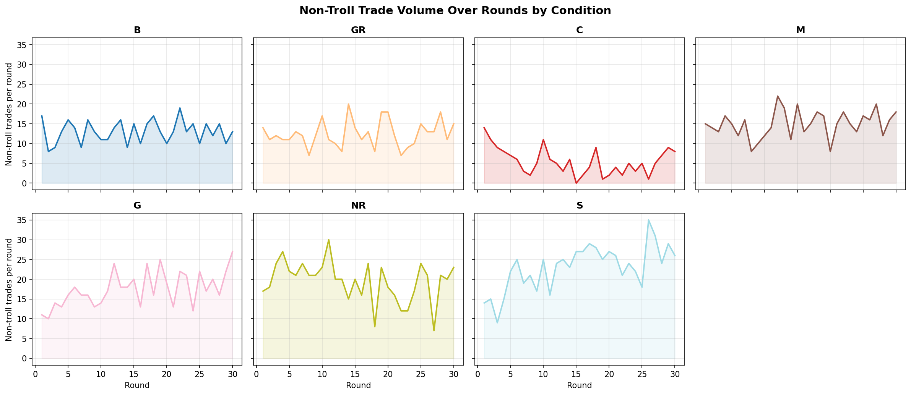

Progress Update — 2 June 2026
Multi-Agent Marketplace Simulation
Comparing institutional cooperation mechanisms for self-interested LLM agents under adversarial stress.
Comparing institutional cooperation mechanisms for self-interested LLM agents under adversarial stress.
Do different mechanisms produce different outcomes under stress?
Which designs are robust to adversarial actors?
How does effectiveness vary across LLM models?
Gap: Most studies test one mechanism in isolation — we compare 7 head-to-head under adversarial stress.
flowchart LR
CLI["CLI"] --> Runner
Runner --> Game
subgraph Game["Game Loop × 30 rounds"]
direction LR
P1["Spoilage
& Produce"] --> P2["Communicate
& Contract"] --> P3["Trade"] --> P4["Consume
& Score"]
end
Game --> Mechs
Game --> LLM["LLM Agent
× 18"]
LLM --> Prompt["Prompt
Builder"]
Prompt --> Market["Market State"]
Market --> Game
subgraph Mechs["Mechanisms"]
direction TB
m1["GR • C • M"]
m2["G • NR • S"]
end
Runner -->|JSON| Analysis["Plots &
Analyst"]
All metrics exclude troll agents — we measure how well the Self - Interested agents fare, not the trolls. Sustainability and cooperation rate are our own constructs (defined in methodology).
The same mechanism can be the best performer on one model and harmful on another.
The baseline spread across models (sustainability 0.47–0.99) dwarfs any mechanism effect.




Marginal benefit of each mechanism vs that model’s own baseline (Δ mean utility, 4 trolls):
| Mechanism | DeepSeek Δ | Mini Δ | Nano Δ |
|---|---|---|---|
| G | +1.02 | −0.61 | +1.89 |
| S | −1.05 | −0.46 | +1.66 |
| NR | +1.33 | +0.34 | +1.48 |
| GR | +0.20 | −0.27 | −0.07 |
| C | −0.33 | −1.05 | −1.28 |
M excluded (delegation bug). Baseline mean utility: DeepSeek 5.35, Mini 1.42, Nano 1.83.
The model is a bigger lever than the mechanism. Baseline utility spread across models (1.42–5.35) dwarfs mechanism effects. G and NR add value; C consistently destroys it.
Formal enforcement works across the capability spectrum. Information-rich mechanisms require a capable model to act on them.
Damaging troll trades (self-interested agent proposed to troll, troll stole goods) — 4 trolls, 30 rounds:
| Condition | Nano | DeepSeek | Mini |
|---|---|---|---|
| B (baseline) | 70 | 97 | 8 |
| GR | 16 | 34 | 6 |
| C | 9 | 29 | 5 |
| G | 14 | 43 | 8 |
| NR | 18 | 27 | 14 |
| S | 78 | 66 | 8 |
| M | 31 | 45 | 14 |
M greyed out (delegation bug). Lower = better troll isolation.
Death spiral: penalty fear → mechanism avoidance → unprotected barter → utility loss → less production → fewer trades
Implementation flaw, not a null result on mediation. All M results should be interpreted with this caveat. Fix (bilateral delegation) planned for future work.
Both mechanisms require agents capable of reasoning about social signals. They work for DeepSeek but fail for mini — a capability threshold, not a mechanism flaw.

Caveat: Escalation data only complete for nano. Based on 1 run per condition — hypothesis-generating, not conclusive.

G defections decline over time — governance deters repeat offenders

C trade volume near zero — market freeze visualized
Governance (G) is the only mechanism never net-negative across nano, mini, and DeepSeek — and the only one that rescues mini
Baseline spread across models (sustainability 0.47–0.99) dwarfs mechanism effects. The model is a bigger lever than the mechanism.
C freezes markets, S drains the commons, GR/NR hurt weak models that can’t reason about the signals — more mechanism ≠ better outcome
Information-rich mechanisms (GR, NR) only work for capable models. Formal enforcement (G) works across the capability spectrum — because it doesn’t rely on agent reasoning
Actionable enforcement (G) beats information-only (GR) and per-trade friction (C, S). M results are unreliable (delegation bug). All conclusions provisional pending replication.
Implement bilateral delegation (proposer + acceptor) and re-run M across all models
Mini at 0/2 trolls (all conditions); DeepSeek at 2 trolls (5 missing conditions)
3 runs per condition for statistical confidence — all findings are single-run
Higher troll counts (6, 8) — G improved from t2→t4 in nano, find its breaking point